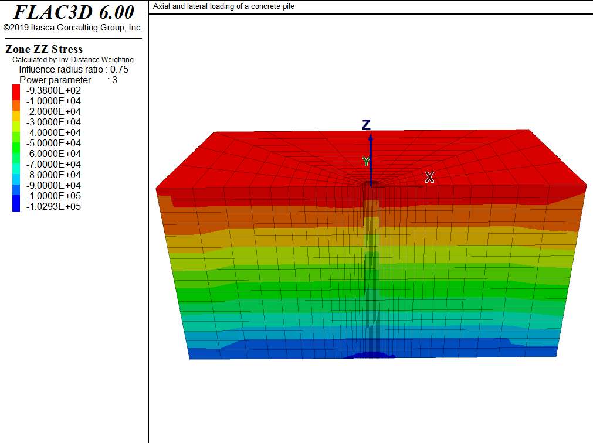
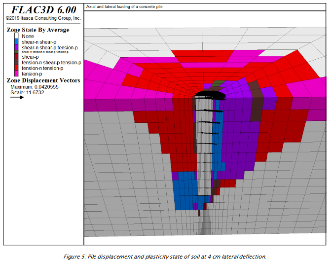

3 Axial Concrete Pile

3.1 Problem Description
3.1.1 Problem Statement
The pile is subjected to an axial load of 100 kN, and then the top of the pile is moved horizontally for a displacement of 4 cm.
The goal is to determine relation of axial loading to the ultimate bearing capacity. And, lateral load-deflection curve is calculated.
- origin at the top of the pile, z upward.
- z=0: free surface
- z=-8: fixed in z-eirection
- x=+8, -8, y = 8: roller
- skin friction is modeled by placing an interface between pile concrete wall and clay. In it, fric angle of 20 and c=30kPa are assumed.
- toe interface is placed between pile tip and clay note: Zone faces
are separated in a previous command so that the gridpoints common to
both will be separated as well.
note: include Figure of grid (geometry)
3.1.2 Main Parameters
Diameter = 0.6 m
Length = 5
Clay
GWT = 5.5m
3.2 Modeling Procedure
equil. stress state under gravity load before install.
1-1) water table is created at z=5.5
1-2) wet density of clay is assigned below this water table.
equil. stress state after installation.
2-1) change properties of pile zones from those
representing clay to those representing concrete.
2-2) vertical equil. stress distribution at this equil. state is shown in
note: include Figure of contours of vertical stress at ini state incld. pile weight
apply vertical velocity at top of pile
“ramp” = boundary condition is increased linearly
note: critical timestep is controlled by high stiffness of concrete
If velocity is sudden, inertial effects will dominate and renders difficulty to identification of steady state response of system
table “ramp” is used to apply velocity to pile top gridpoints.
note: FISH FUNCTION vert_load calculates axial stress at the top of pile and stores value as a history
For efficiency, gridpoints on cap surface are stored in symbol “cap” as a map
note: include plot of axial stress vs axial displ. at pile toe. ramp = (0,5e-8), step number = 30000
note: combined damping is used to remove kinetic energy for prescribed loading condition. This is because mass-adjustment process depends on velocity sign-changes..
note: FISH FUNCTION tot_reac monitors soil reaction along pile as a func of lateral displ. tot_reac creates tables of soil reaction (p) vs. lateral displ (y) at diff. locations along pile to generate p-y curve.
note: include Figure of p-y curve at 11 equidistant points along pile
3.3 Zones
model new
model title 'Axial and lateral loading of a concrete pile'
; create grid interactively from the extruder tool,
; exported to geometry.f3dat from State Record pane.
call 'geometry' suppress
zone generate from-extruder
; Reflect the grid to get a 1/2 space instead of a 1/4 space
zone reflect dip-direction 270 dip 903.4 Groups
; Name intersections of things named in the two extruder views
zone group 'clay' range group 'clay-c' or 'clay-s' or 'wetclay-s'
zone group 'pile' range group 'pile-c' group 'pile-s' or 'remove-s'
zone group 'remove' range group 'remove-s' group 'pile-c' not ;
zone face group 'wall' internal range group 'wall-c' group 'pile'
zone face group 'base' internal range group 'base-s' group 'pile'
zone face skin ; Name far field boundaries
; Delete the area marked for removal
zone delete range group 'remove'
;
; setup interfaces
; separate using zone separate
; all at once so common nodes are separated
zone separate by-face new-side group 'iwall' slot 'int' ...
range group 'wall' or 'base'
; Want two different interfaces for proper normal direction at corner
zone interface 'side' create by-face range group 'wall' and 'iwall'
zone interface 'base' create by-face range group 'base' and 'iwall'
; Save initial geometric state
model save 'geometry'3.5 Properties
; Initialize gravity, pore-pressures, density, and stres state
model gravity 10
; water table information
zone water density 1000
zone water plane origin (0,0,-5.5) normal (0,0,-1)
zone initialize density 1230
zone initialize density 1550 range group 'wetclay-s' ; Wet density
; assign properties to the soil and interfaces - temporarily remove pile cap
zone cmodel assign mohr-coulomb ...
range group 'clay'
zone property bulk 8.333e7 shear 3.846e7 cohesion 30000 fric 0 ...
range group 'clay'
zone cmodel assign elastic range group 'pile'
zone property bulk 8.333e7 shear 3.846e7 range group 'pile'
zone cmodel assign null range group 'remove-s'
zone interface 'side' node property stiffness-normal 1e8 ...
stiffness-shear 1e8 friction 20 cohesion 30000
zone interface 'base' node property stiffness-normal 1e8 ...
stiffness-shear 1e8 friction 20 cohesion 300003.6 B.C. and I.C.
; boundary and initial stress conditions
zone face apply velocity-normal 0 range group 'Bottom'
zone face apply velocity-normal 0 range group 'East' or 'West'
zone face apply velocity-normal 0 range group 'North' or 'South'
zone initialize-stress ratio 0.4286
zone interface 'side' node initialize-stresses
zone interface 'base' node initialize-stresses3.7 Initial Equilibrium
; Solve to initial equilibrium
zone ratio local
model solve ratio 1e-4
model save 'initial'3.8 Alterations
3.8.1 install the pile
; install the pile
model restore 'initial'
zone cmodel assign elastic range group 'pile'
zone property bulk 13.9e9 shear 10.4e9 density 2500 range group 'pile'
model solve ratio 1e-4
model save 'install'3.8.2 vertical loading
; vertical loading
zone initialize state 0
zone gridpoint initialize displacement (0,0,0)
zone gridpoint initialize velocity (0,0,0)
table 'ramp' add ([global.step],0) ([global.step+30000],-5e-8) ...
([global.step+58000],-5e-8) ; Increase velocity applied to pile
; over 30,000 steps
zone face apply velocity-normal 1 table 'ramp' range group 'Top'
history interval 250
zone history name 'disp' displacement-z position (0,0,0)
call 'load'
fish history name 'load' @vert_load
zone mechanical damping combined
model step 58000
model save 'vertical-loading'3.8.3 vertical then lateral loading
; vertical loading then lateral loading
model restore 'install'
zone initialize state 0
zone gridpoint initialize displacement (0,0,0)
zone gridpoint initialize velocity (0,0,0)
zone face apply stress-zz [-1.0e5/(math.pi*0.3*0.3)] range group 'Top'
model solve ratio 1e-4
model save 'lateral-load-start'
; apply lateral loading as x-velocity on cap
zone initialize state 0
zone gridpoint initialize displacement (0,0,0)
zone gridpoint initialize velocity (0,0,0)
zone face apply velocity-x 1e-7 range group 'Top'
zone history name 'disp' displacement-x position 0,0,0
call 'p-y' suppress ; Calculates p-y curve for pile, when tot_reac is called
@make_pydata ; Generate p-y curve calculation data
@output_structure ; Sanity check of p-y curve data
fish history name 'load' @tot_reac
model step 416500
model save 'lateral-load'